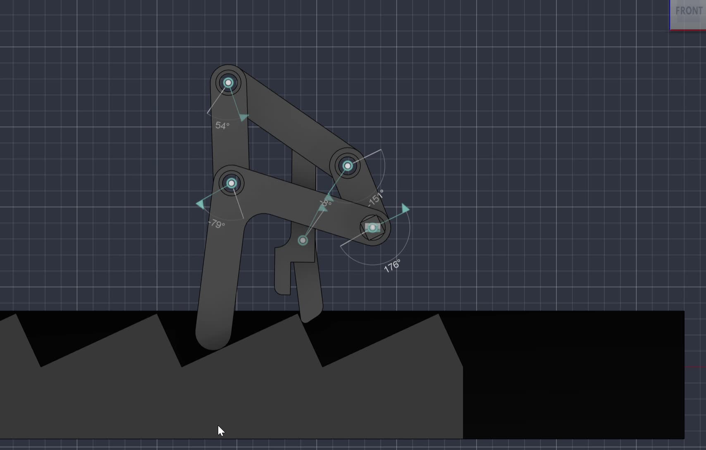

TerraTrek: Legged
Stair-Climbing Robot
Development of a walking mechanism for stepped terrain, progressing from a hand-driven rack-advancing prototype to a motorized robot.
- Current stage
- Project 2 development
- Available work
- Linkage model, CAD animation, physical Project 1 demonstration
Mechanism design · Kinematics · PrototypingView project